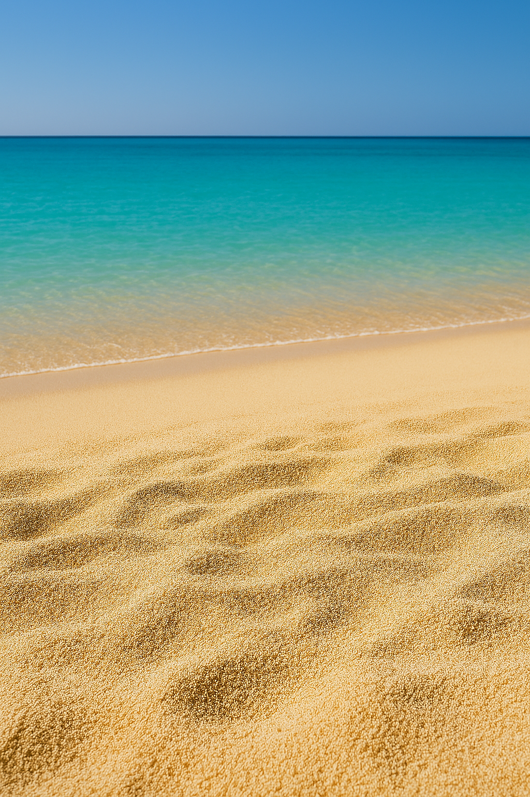

Bora Bora
Bora Bora on yksi Ranskan Polynesian tunnetuimmista saarista ja sijaitsee noin 230 km Tahitista luoteeseen. Tuliperäistä saarta hallitsee jylhä Mount Otemanu (727 m), ja sitä ympäröi kirkas turkoosi laguuni. Saari on tunnettu erityisesti yli veden rakennetuista bungaloweista, koralliriutoista ja trooppisista maisemista.
- Sijainti: Ranskan Polynesia, Tyynimeri
- Korkein huippu: Mount Otemanu (727 m)
- Tunnettu: turkoosi laguuni, koralliriutat ja luksusresortit
- Suosittuja aktiviteetteja: snorklaus, sukellus, laguuniretket ja vaellukset
Lähde: Wikipedia – Bora Bora https://en.wikipedia.org/wiki/Bora_Bora

Bora Bora numeroina
“Tyynenmeren helmi” tunnetaan jylhästä Otemanusta, turkoosista laguunista ja legendaarisista yli‑veden bungaloweista. Tässä muutama nopea fakta suunnittelun tueksi.
Kilometriä Tahitilta noin luoteeseen Papeetesta
Korkein huippu (m) Mount Otemanu
Riutan läpikulkuja Teavanui Pass (ainoa)
Pinta-ala (km²) kompakti ja helppo kiertää
Asukkaita (viimeisin virallinen luku)
Julkinen ranta Matira Beach (pääsaarella)
Reo Tahiti
Tahitilla puhutaan englantia, ranskaa ja reo tahitin kieltä!
Hyödyllisiä fraaseja matkailijoille reo tahitiksi!
Ia ora na
Terve!
Māuruuru
Kiitos.
Nānā
Näkemiin.
E aha tō ‘oe huru?
Mitä kuuluu?
‘Ē
Kyllä.
Aita
Ei.
